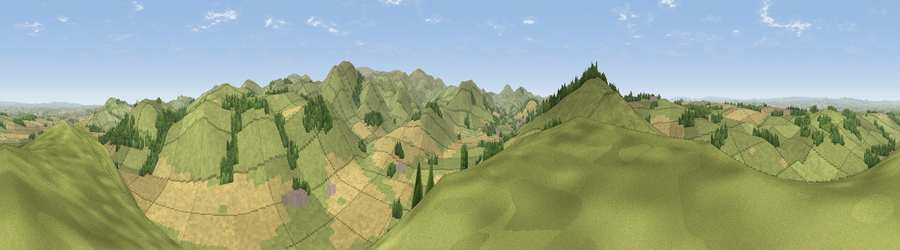

Bowmont Hill
#6208 in England · top 28% of its area beats it · —The view, rendered

A 360° render of this exact spot computed from the terrain model, tree cover and land cover — summer colours, afternoon light, calibrated against photographs of famous viewpoints. Real trees, hedges and buildings will differ in detail.
The panorama
Grey silhouette: terrain skyline in each direction (720 bearings, Earth curvature and refraction included). Dashed green: skyline with trees (+15 m) and buildings (+8 m) as obstacles. Blue strip: how far the ground is visible on each bearing.
Where the view opens
Wedge length = distance to the farthest visible ground on that bearing (vegetation-aware). Rings at 10, 25 and 50 km.
What fills the view
68% grassland · 25% cropland · 6% woodland
Angular shares of the visible panorama (visual magnitude), not map area. Landscape diversity 0.35 (0–1 Shannon).
Key numbers
More beautiful places nearby
The staircase of upgrades: each row has a higher view potential than everything closer. Driving times are estimates from straight-line distance, calibrated against real road routing — check an actual route before setting out.
| Place | Direction | Drive | Score |
|---|---|---|---|
| Viewpoint c12574_7711 | SE · 3 km | ~7 min | 80.9 |
| Coldsmouth Hill | SE · 3 km | ~8 min | 81.9 |
| Moneylaws Hill | NE · 5 km | ~12 min | 83.0 |
| Wester Tor | ESE · 8 km | ~16 min | 84.9 |
| Viewpoint near Kirknewton | E · 10 km | ~19 min | 86.1 |
| Greensheen Hill | ENE · 23 km | ~38 min | 87.5 |
| Viewpoint near Chillingham | ESE · 25 km | ~41 min | 88.1 |
| Ullock Pike | SSW · 118 km | ~142 min | 89.4 |
55.57070, -2.26443 · source: osm peak · position refined by local search. Computed location — check access rights before visiting.